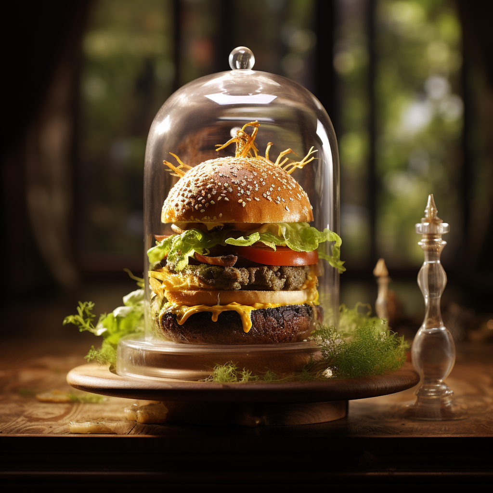

Neugètsse
À la lueur des étoiles, nous vous convions à une expérience culinaire rare et exquise.
Nos Neugètsse, préparé avec une précision artisanale et des ingrédients d'une qualité
inégalée,
vous transportera dans un voyage gustatif sans précédent.
Laissez-vous séduire par la subtilité des saveurs,
l'harmonie des textures et l'élégance de chaque bouchée.
Découvrez l'exception incarnée dans chaque assiette,
une ode à la gastronomie qui éveillera vos sens et nourrira votre âme.

Le burgé du boucher
Un trésor gastronomique à nul autre pareil vous attend ici,
un joyau de notre cuisine qui transcende les frontières de l'ordinaire.
Laissez-vous envoûter par l'essence de l'excellence culinaire,
où chaque ingrédient a été soigneusement sélectionné et chaque saveur a été méticuleusement
équilibrée pour créer une symphonie gustative inoubliable. Dans l'art de la cuisine, ce plat
incarne l'apogée de la perfection, une expérience gastronomique qui transcende le simple
repas pour devenir une ode à la délectation des sens

Anaconda de veau
Dans notre quête incessante de l'excellence, nous avons découvert une perle rare,
un trésor gastronomique qui repousse les limites de la délectation culinaire.
Ce plat, élaboré avec une passion inégalée et des ingrédients d'une rareté exquise,
incarne l'essence même de l'exception. Chaque bouchée est un voyage sensoriel,
une rencontre avec l'art de la gastronomie à son apogée.
Éveillez vos papilles à une expérience qui transcende les frontières du goût ordinaire,
et laissez-vous emporter par cette symphonie culinaire où l'élégance et l'authenticité
se
marient dans une danse envoûtante.